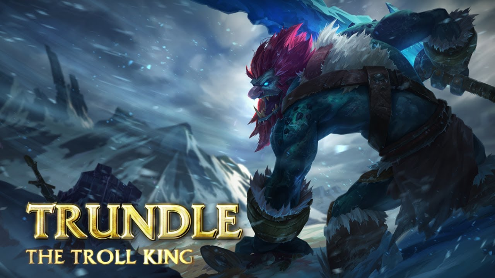

Hobbies
|  | League of LegendsCurrent Rank: Gold 2 You could say that he is a "troll." |
EcchiGerardo Velasco is a connoisseur of the finer arts. He spends his time reveling in all that is ecchi. To him its not just a hobby but a way of life. |
|
Visual NovelsIn his free time, Gerardo Velasco Jr. loves to read. His favorite genre is Visual Novels. The genre perfectly combines his love of ecchi and research. |